SO… WHY THE PROJECT IS CALLED OCTOPUS?
Octopuses are extraordinary creatures with three hearts, blue blood, and a complex nervous system. With one central brain and neurons distributed throughout their eight arms, they can explore, process information, and act with remarkable independence while remaining connected as a whole.
That is why we chose the octopus as our project symbol: it represents diversity, interconnectedness, and the power of different parts working together.
SHORTLY ABOUT THE PROJECT
Our project aims to support more inclusive educational and pedagogical practices in youth work across Europe.
We invite youth workers, educators, teachers, and facilitators to rethink and adapt their activities to make learning more accessible and meaningful for neurodivergent learners. We see this as an ongoing journey of learning, collaboration, and improvement.
If you believe education should create opportunities for everyone, especially those whose needs are often overlooked, we hope these resources will inspire and support you. We welcome your ideas and feedback as we work towards a more inclusive future together.
This project brought together four European organisations, each contributing unique expertise and perspectives. CAAT Projects (Netherlands) coordinated the project, bringing experience in human rights education and creative learning methodologies. Anthropos (Lithuania) contributed expertise in anthropology, academic research, and connections with neurodivergent communities. AddArt (Greece) brought creative skills in graphic design, animation, visual communication, and gamification, while Contextos (Portugal) contributed experience in Erasmus+ projects, non-formal education, and collaboration with local and international youth organisations. Together, the partners combined their knowledge and creativity to explore new ways of making education more inclusive and accessible for everyone.
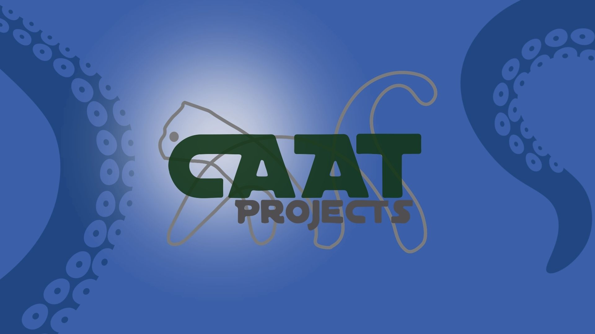 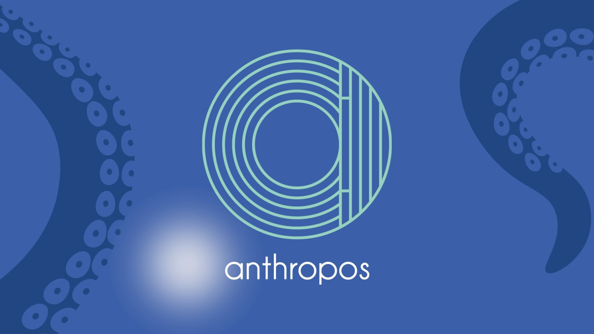 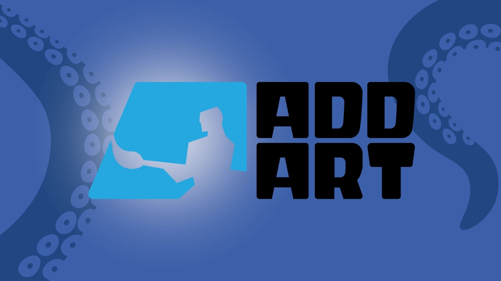 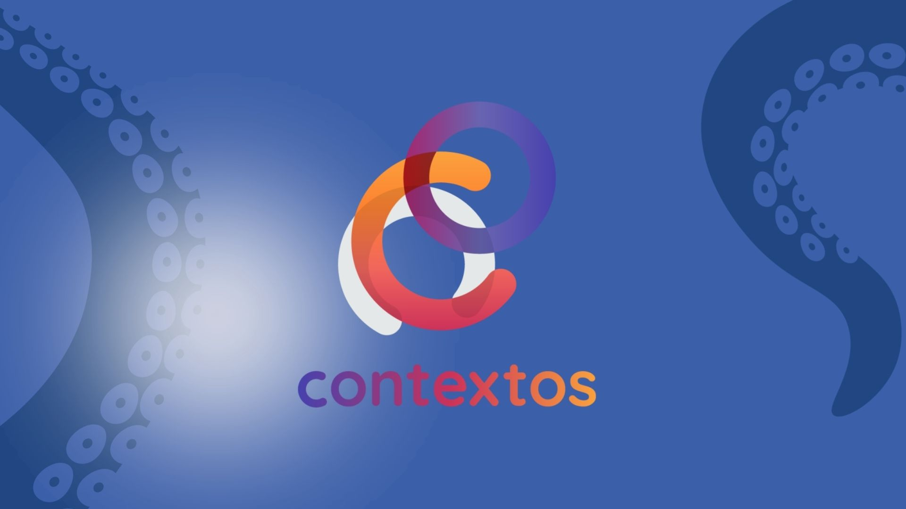
WE ARE PROUD TO PRESENT OUR PROJECST’S RESULTS
1. The Participatory Research. Provide more direct ways for young people with mobility disabilities to participate in the stages of planning, development and implementation of services and infrastructure through: steering committees, focus groups and other youth-friendly activities.
2. The Toolkit. Improve accessibility of youth oriented activities and facilities on a local, municipal level through making sure that built infrastructure is maintained and repaired in a timely manner.
3. Videos. Improve accessibility of youth oriented activities and facilities on a local, municipal level through making sure that built infrastructure is maintained and repaired in a timely manner.
4. The Board Game. Improve accessibility of youth oriented activities and facilities on a local, municipal level through making sure that built infrastructure is maintained and repaired in a timely manner.
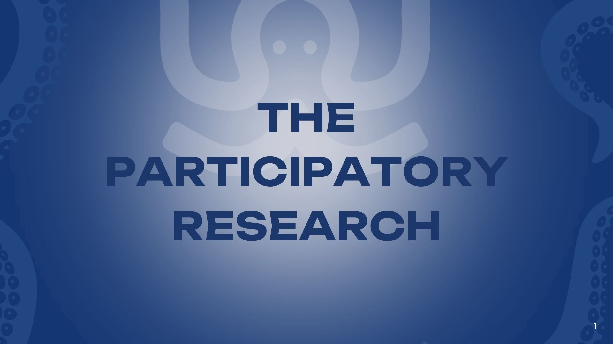 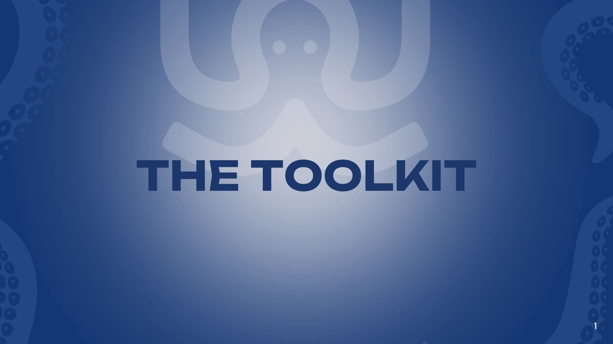 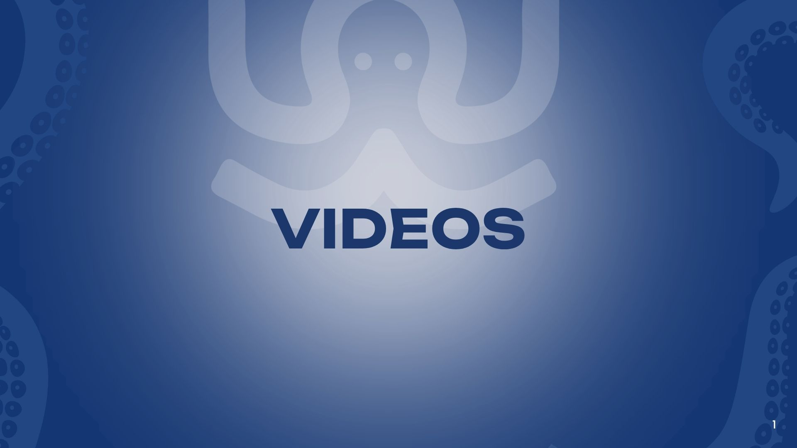 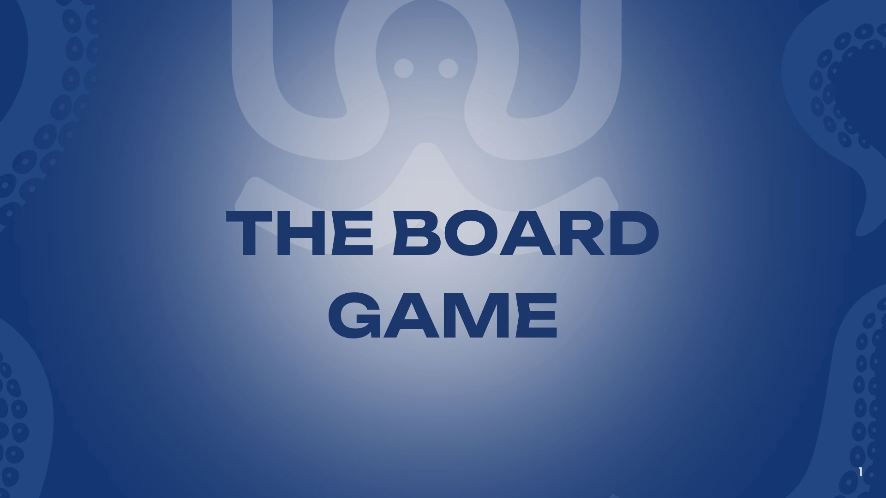
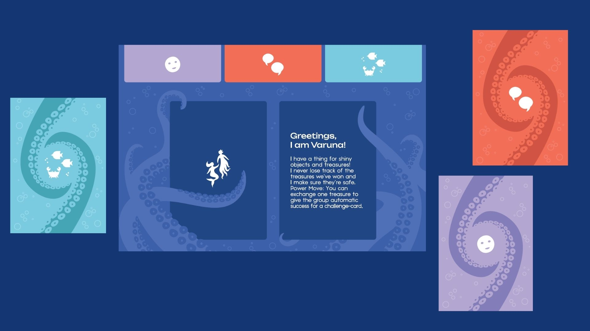 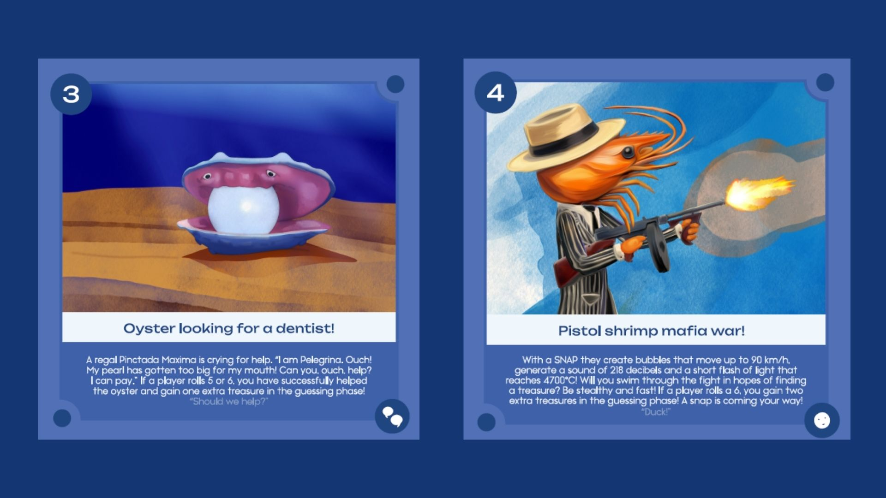 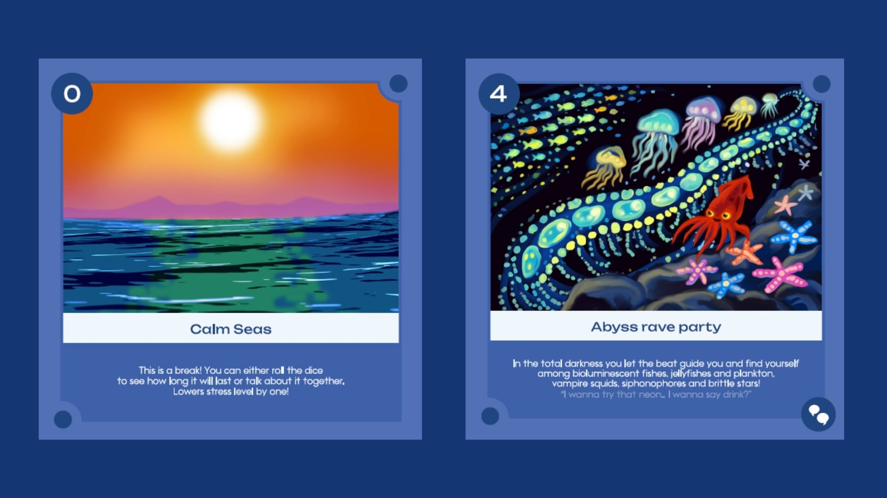
Here you can check out the project’s official page (EN):
Peržiūrėti / View
Prepared by "Anthropos"
ALL OUR PUBLICATIONS
APPLIED ANTHROPOLOGY ORGANIZATION "ANTHROPOS"
Company Code: 304743335
VAT Code: LT100018477116*
Registration address: Laisvės a. 110, LT-44253, Kaunas, Lithuania
Bank account No.: Luminor LT 20 4010 0510 0419 3055
Email: taikomoji.antropologija@gmail.com
Phone No.: +37065350308 (Ugnė Barbora Starkutė)
* VAT not applied. The small business scheme in Lithuania applies.